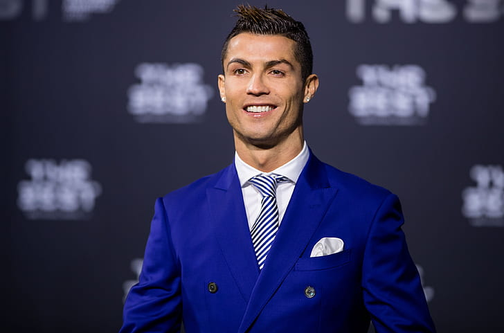
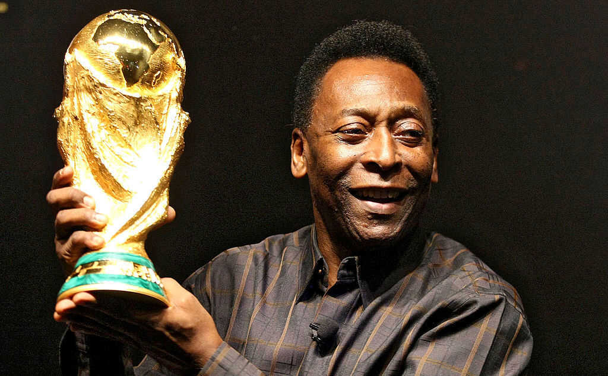
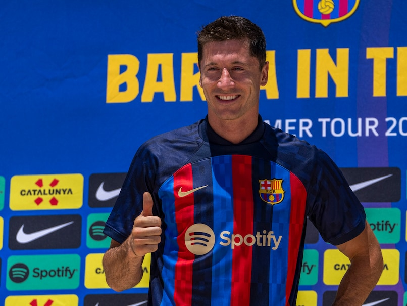
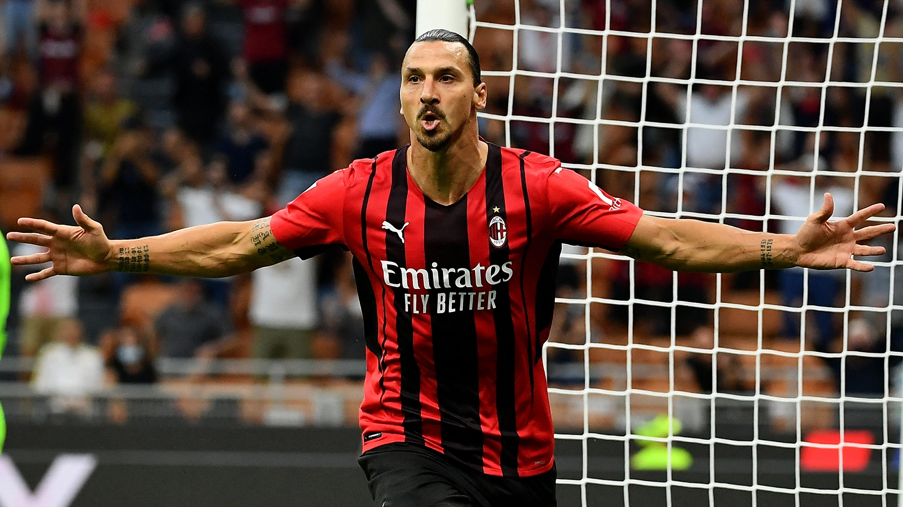

Ranking with most goal scored:
1. Cristiano Ronaldo:

Over the course of his career, Portuguese footballer Cristiano Ronaldo has received five Ballon d'Or/FIFA Ballon d'Or awards,[a] the most for a European player. Widely regarded as one of the greatest players of all time, Ronaldo holds the record for most goals and assists in the UEFA Champions League (140 and 42 respectively), and the record for most goals in the UEFA European Championship (14), its qualification stage (31), and the FIFA Club World Cup (7), as well as most goals scored in a UEFA Champions League season (17), most international goals (115), and most appearances in a European national team (180). He has scored a record 812 senior career goals for club and country. Moreover, he is one of the few recorded players to have made over 1,100 professional career appearances. Collectively, Ronaldo has won 32 senior trophies in his career. He has also attained one title from youth and at least five titles from friendly competitions. All in all he had won over 300 trophies and medals by January 2021, with some of them dating back to his childhood.
Ronaldo began his career as a youth player for Andorinha, where he played for two years, before moving to C.D. Nacional. In 2003 he caught the attention of Manchester United manager Alex Ferguson, who signed him for £12.2 million (€15 million).
In December 2014, Ronaldo became the fastest player to score 200 goals in La Liga when, in his 178th La Liga game, he scored a hat-trick against Celta Vigo; his 23rd hat-trick was also a La Liga record.
2 . Lionel Messi:
Argentinian footballer Lionel Messi, widely regarded as one of the greatest players of all time, has received seven Ballon d'Or awards, the most for any football player, as well as the 2009 FIFA World Player of the Year and 2019 The Best FIFA Men's Player. Messi holds the record for most goals in La Liga (474), the Supercopa de España (14), the UEFA Super Cup (3) and is the player with the most official recorded assists in football history (331).[4][5] He has scored 792 goals for club and country throughout his professional career and is also the first player in history to win five and six European Golden Shoes.
Messi’s brilliance does not only end with scoring goals but also helping his Barcelona teammates do the same. The Copa America winner put on 193 assists, another La Liga record.
Lionel Messi also has the joint record for most assists in a single season. He and Thomas Muller set the joint record in the 2019-20 season when both ended up with 21 assists.
The six-time Ballon d’Or winner holds the record for the most goals in a single La Liga season. Lionel Messi went on a rampaging run in the 2011-12 season. He finished with 50 goals in 37 La Liga matches.
En route to scoring 50 goals in the league Lionel Messi scored a hat-trick against Granada. The hat-trick helped him overtake Cesar Rodriguez as the highest scorer in the Barcelona history.

3. Pele:

Pelé began playing for Santos at age 15 and the Brazil national team at 16. During his international career, he won three FIFA World Cups: 1958, 1962 and 1970, the only player to do so. Pelé is the all-time leading goalscorer for Brazil with 77 goals in 92 games. At club level he is Santos' all-time top goalscorer with 643 goals from 659 games.[3] In a golden era for Santos, he led the club to the 1962 and 1963 Copa Libertadores, and to the 1962 and 1963
Intercontinental Cup. Credited with connecting the phrase "The Beautiful Game" with football, Pelé's "electrifying play and penchant for spectacular goals" made him a star around the world, and his teams toured internationally in order to take full advantage of his popularity.[4] During his playing days,
Pelé was for a period the best-paid athlete in the world. Since retiring in 1977, Pelé has been a worldwide ambassador for football and has made many acting and commercial ventures.
In 2010, he was named the Honorary President of the New York Cosmos.Averaging almost a goal per game throughout his career, Pelé was adept at striking the ball with either foot in addition to anticipating his opponents' movements on the field. While predominantly a striker, he could also drop deep and take on a playmaking role, providing assists with his vision and passing ability, and he would also use his dribbling skills to go past opponents.
4 . Robert Lewandowski:
Robert Lewandowski born 21 August 1988 is a Polish professional footballer who plays as a striker for La Liga club Barcelona and captains the Poland national team. Recognised for his positioning, technique and finishing, Lewandowski is considered one of the best strikers of all time, as well as one of the most
successful players in Bundesliga history. He has scored over 600 senior career goals for club and country.
After being the top scorer in the third and second tiers of Polish football with Znicz Pruszków,
Lewandowski moved to top-flight Lech Poznań, helping the team win the 2009–10 Ekstraklasa. In 2010,
he transferred to Borussia Dortmund, where he won honors including two consecutive Bundesliga titles and the league's top goalscorer award. In 2013, he also featured with Dortmund in the 2013 UEFA Champions League Final. Prior to the start of the 2014–15 season, Lewandowski agreed to join Dortmund's domestic rivals, Bayern Munich, on a free transfer. In Munich, he has won the Bundesliga title in each of his first eight seasons. Lewandowski was integral in Bayern's UEFA Champions League win in 2019–20 as part of a treble. He is one of only two players, alongside Johan Cruyff, to achieve the European treble while being the highest goalscorer in all three competitions, and the first to do it as the sole top scorer.
In 2020, Lewandowski won the Best FIFA Men's Player Award (retained in 2021) and the UEFA Men's Player of the Year Award. He has been named to the UEFA Team of the Year twice and the UEFA Champions League Squad of the Season four times, and is the third-highest goalscorer in the history of the competition. Lewandowski has been named the VDV Bundesliga Player of the Season a record five times. He has scored over 300 goals in the Bundesliga (second-highest goalscorer of all time in Bundesliga, only behind Gerd Müller's 365 Bundesliga goals), having reached the century mark quicker than any other foreign player, and is the league's all-time leading foreign goalscorer.

5. Zlatan Ibrahimović:

Ibrahimović began his career at Malmö FF in 1999, and signed for Ajax two years later, where he gained a reputation as one of the most promising forwards in Europe. He departed two years later to sign for Juventus before joining domestic rivals Inter Milan in 2006, where he won three consecutive Serie A titles. In the summer of 2009, he moved to Barcelona in one of the world's most expensive transfers. After just one season, he returned to Italy having signed for Inter's rival Milan. With them, he won the Serie A title in his debut season. In 2012, Ibrahimović joined Paris Saint-Germain, leading them to their first Ligue 1 title in 19 years and soon establishing himself as a leading figure in their dominance of French football. During his four-season stay in France, he won four consecutive Ligue 1 titles, was the top scorer in Ligue 1 for three seasons and became PSG's all-time leading goalscorer at the time. In 2016, he joined Manchester United on a free transfer and won his first European honour in his debut season.
Ibrahimović is one of eleven players to have made 100 or more appearances for the Swedish national team, over a 20-year international career. He is the country's all-time leading goalscorer with 62 goals. He represented Sweden at the 2002 and 2006 FIFA World Cups, as well as the 2004, 2008, 2012, and 2016 UEFA European Championships. Ibrahimović's 35-yard bicycle kick goal for Sweden against England won the 2013 FIFA Puskás Award, and is often considered one of the best goals of all time.